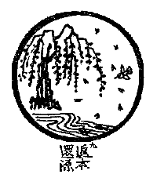

BuddhaSasana Home Page
This document is written in Vietnamese, with Unicode Times
font
 Dẫn
Xưa nay thanh tịnh, chẳng nhận mảy trần. Xem có tướng phải chịu tươi khô, ở vô vi thì ngưng lặng. Chẳng đồng huyễn hóa đâu nhờ tu hành. Nước biếc non xanh ngồi xem thành bại.
Giảng Giải
Xưa nay thanh tịnh, chẳng nhận mảy trần: Bản nguyên chân thật của mỗi người xưa nay vốn là thanh tịnh, không có một vật thì bụi trần làm sao dính được. Xem có tướng phải chịu tươi khô, ở vô vi thì ngưng lặng: Nếu vật có hình tướng thì bị vô thường chi phối, có tươi, có khô, có sanh có diệt, luôn luôn biến đổi. Nếu là vô vi không hình tướng thì chìm trong vắng lặng. Vậy, pháp có tướng thì sanh diệt, không tướng thì chìm trong trống lặng nên phải vượt qua. Chẳng đồng huyễn hóa đâu nhờ tu hành: Bản nguyên chân thật của mỗi người không phải là pháp hư dối huyễn hóa thì đâu nhờ dụng công tu hành mà được. Vì nó vốn sẵn có như vậy. Nước biếc non xanh ngồi xem thành bại: Người mà sống với bản nguyên của mình, thì đối với các pháp thì thấy rõ bản vị của nó, tâm không mê muội, dao động dính mắc. Thiền sư Duy Tín nói: (1) Chưa gặp thiện tri thức, thấy núi sông là núi sông. (2) Gặp thiện tri thức chỉ dạy, thấy núi sông không phải là núi sông. (3) Bây giờ ba mươi năm, thấy núi sông là núi sông. Giai đoạn (3) thấy núi sông là núi sông đó là" "Nước biếc non xanh ngồi xem thành bại". Ðó là trở về nguồn, là phản bổn hoàn nguyên.
Tụng
Phản bổ hoàn nguyên dĩ phí công
Tranh như trực hạ nhược manh lung
Am trung bất kiến am tiền vật
Thủy tự mang mang hoa tự hồngDịch
Phản bổn hoàn nguyên đã phí công
Ðâu bằng thẳng đó tợ mù câm
Trong am chẳng thấy ngoài vật khác
Nước tự mênh mông hoa tự hồngGiảng Giải
Cội nguồn là tâm thể chân thật, nó vốn sẵn như vậy, không cần phí công để tìm, không cần phí sức để trở lại. Chỉ cần mắt thấy sắc không phân biệt đẹp xấu. Tai nghe tiếng không phân biệt hay dở. Thấy nghe mà không phân biệt tốt xấu, hay dở, cũng giống như mù như điếc nên nói mù câm. Trong am là chỉ cho tâm thể thênh thang trùm khắp không có một vật gì ngoài nó. Chừng đó mới thấy tự tại, thấy nước mênh mông, thấy hoa tự nở hồng nở tía mà không bận tâm không vướng mắc, đó là phản bổn hoàn nguyên, gọi là vào cảnh giới Phật.
[Lời Tựa]
Tranh Thiền Tông: [1] [2] [3] [4] [5] [6]
[7] [8] [9] [10]